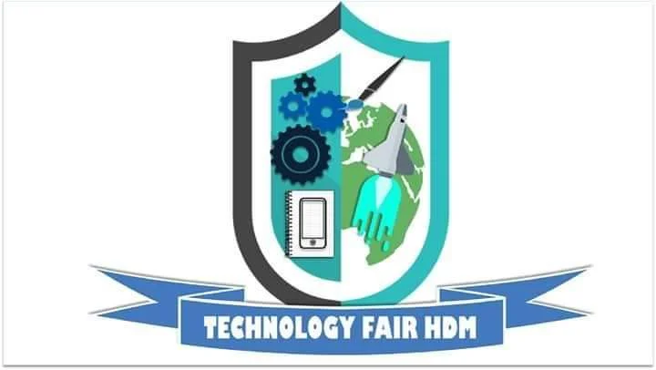

I. E. HIJOS DE MARÍA – HDM
Somos una Institución que brinda formación de calidad a nuestros estudiantes, en los niveles de preescolar, Básica primaria, Básica secundaria y Media, en la ciudad de Cartagena en el departamento de Bolívar.
Brindamos los servicios académicos en cuatro sedes educativas, así:
SEDE PRINCIPAL
SEDE RAFAEL TONO
SEDE LUIS CARLOS GALAN
SEDE REPÚBLICA DE MÉXICO
Hemos creado este espacio virtual, para compartir contenidos digitales con toda nuestra comunidad educativa, atendiendo así la contingencia de confinamiento de los estudiantes desde el 20 de abril de 2020, en el marco de la declaratoria de emergencia económica y social (Decreto 417 del 17 de marzo de2020).
MISION Y VISION
Institucion Educativa Hijos De Maria
identificada con el número 113001002120 ubicada en Cartagena, Bolívar zona Urbana con dirección 13 De Junio Cll. 31 D # 64-94.
POLITICA DE CALIDAD
.webp)
Una política de calidad es un documento desarrollado por la gerencia para expresar la directiva de la alta dirección con respecto a la calidad.
OBJETIVOS DE CALIDAD
.webp)
Los objetivos de calidad se definen como objetivos medibles que son relevantes para mejorar la satisfacción del cliente y al mismo tiempo son consistentes con la política de calidad . ... Se establece un objetivo general y en base al mismo se fijarán objetivos concretos para cada uno de los procesos.
MAPA DE PROCESOS
.webp)
Un mapa de procesos es un diagrama de valor que representa, a manera de inventario gráfico, los procesos de una organización en forma interrelacionada. ... Un proceso es el conjunto de actividades y recursos interrelacionados que transforman los elementos de entrada en elementos de salida aportando valor para el usuario.
FERIA TECNOLOGICA

Todo el equipo tecnologico de HDM decidio fundar la FERIA TECNOLOGICA despues de darse cuenta que nuestra institucion cuenta con grandes potencias estudiantiles, HDM encontro la manera de que sus estudiantes demuestren sus capacidades,talentos, habilidades tecnicas y de tecnologias aplicando creatividad y imaginacion para la creacion de estos y muchos otros proyectos que se han hecho en esta institucion en los cuales muchos de los estudiantes han encontrado vocacion en muchas acciones que se usan al momento de la creacion de estos proyectos como la mecanica, fisica, reciclaje, arte y emprendimiento
Todos en HDM estan orgullosos de las capacidades de nuestros estudiantes, CON ESFUERZO HACIA EL EXITO.
EDICIONES ANTERIORES
.webp)
Nuestras ediciones anteriores de la feria solo dejan en vista de todos en como ayudan a desarrollar las competencias, talentos y habilidades de nuestros estudiantes, todo esto va de la mano con una sana convivencia entre todos los que hacemos parte de HDM
GRADO 6°
Microscopio.
Ella es Luz Adriana de 6°5 una joven estudiante de nuestra institucion educativa HDM la cual su proyecto tecnologico consta sobre un microscopio con el cual se permiten ver las bacterias de COVID-19 y que se encuentran en nuestro organismo.
Robot Organizador.
El es Santiago Blanco de 6°4 un joven estudiante de nuestra institucion educativa HDM la cual su proyecto tecnologico consta sobre un robot organizador que suple necesidades de organizacion y echo sobre todo con materiales reciclables haciendonos recordar siempre el uso de el reciclaje.
Microscopio.
Ella es Gloribeth Andrea de 6°5 una joven estudiante de nuestra institucion educativa HDM la cual su proyecto tecnologico consta sobre una mesa con la cual se permiten suplir necesidades de uso escolar y de otros ambitos.
Linterna.
Ella es Hannys Sofía de 6°5 una joven estudiante de nuestra institucion educativa HDM la cual su proyecto tecnologico consta sobre una linterna con la suficiente potencia para alumbrar lugares con un bajo nivel de luz y con el cual se permite hacer busquedas en espacios reducidos.
GRADO 7°
Bolso.
Ella es Yohalibeth zuluaga de 7°2 una estudiante de nuestra institucion educativa HDM la cual su proyecto tecnologico consta sobre como ella usando todo el termino y las fases del reciclaje creo un bolso apartir de pantalones antiguos, sin duda los estudiantes de HDM demostrando y queriendo enfatizar en el reciclaje.
Energia.
El es Santiago Franco de 7°3 un estudiante de nuestra institucion educativa HDM la cual su proyecto tecnologico consta sobre como el apartir de materiales caseros y platicos hace energia la cual termina en la fabricacion de aire.GRADO 8°
Fisica.
Ella es Dayana valdez de 8°1 una estudiante de nuestra institucion educativa HDM la cual su proyecto tecnologico consta sobre como ella usando la fisica logro esta hazaña, dejando en claro que los estudiantes de HDM son buenos en todos los aspectos.
Abanico electronico.
Ella es Rosa Maria de 8°2 una estudiante de nuestra institucion educativa HDM la cual su proyecto tecnologico consta sobre como ella realizo que apartir de un cargador de dispositivos moviles logro que un abanico hecho con materiales caseros produciera aire.
Dispensador antibacterial.
El es Adolfo chaverra de 8°4 una estudiante de nuestra institucion educativa HDM la cual su proyecto tecnologico consta de un dispensador de antibacterial, un proyecto bastante acorde a la situacion que se ha vivido los ultimos 2 años con respecto al COVID-19 fomentando el lavado de manos, ante todo la seguridad.GRADO 9°
Negocio de ropa.
Ella es Daniela Karina de 9°3 una estudiante de nuestra institucion educativa HDM la cual su proyecto tecnologico consta sobre un negocio de venta de ropa con el cual se permiten el intercambio de bienes entre personas y la necesidad de su propia adquicison de dinero.Bomba de aire.
El es Elias David de 9°3 un estudiante de nuestra institucion educativa HDM la cual su proyecto tecnologico consta sobre una bomba de aire hecha con materiales bastante accesibles para todos y bastante funcional.
Licuadora.
El es Steven Sierra de 9°2 un estudiante de nuestra institucion educativa HDM la cual su proyecto tecnologico consta sobre una pequeña licuadora pero potente con la cual se puede realizar procesos de licuados instantaneos y sobre todo muy creativo.
Empresa de moda.
Ella es Ana Maria Rodriguez de 9°2 una estudiante de nuestra institucion educativa HDM la cual su proyecto tecnologico consta sobre una empresa de moda que esta con la meta de vender sus materiales y confecciones a nivel internacional, cuenta con paginda de facebook para cualquier interesado Mas informacion.
Restaurante el delirio.
El es Diego hurtado de 9°4 un estudiante de nuestra institucion educativa HDM la cual su proyecto tecnologico consta sobre un restaurante de comida sana en su mayoria y que tiene como eslogan o frase "El exito no se logra solo con cualidades o especialidades tambien con amor y dedicacion".
Mano robotica.
Ella es Luz neira de 9°4 una estudiante de nuestra institucion educativa HDM la cual su proyecto tecnologico consta sobre una mano robotica hecha con material recicable como carton para fomentar el reciclaje de todos en nuestros hogares.
GRADO 10°
Empresa Distribuidora
El es Marlon Bellido de 10°2 un estudiante de nuestra institucion educativa HDM la cual su proyecto tecnologico consta sobre una empresa distribuidora de componentes de abanicos y de todo tipo de modelos marcas y formas a nivel nacional e internacional.
Sistema STEAM
Ella es Maria liz herrera de 10°2 una estudiante de nuestra institucion educativa HDM la cual su proyecto tecnologico consta sobre el sistema STEAM y como puede ayudarnos a mejorar educativa y socialmente en todos las areas y sentidos sin dudas un sistema que los estudiantes debemos de empezar a sacarle el maximo provecho.
Cultivo y venta de maiz.
El es Leider Sayas de 10°3 un estudiante de nuestra institucion educativa HDM la cual su proyecto tecnologico consta sobre un negocio de cultivo de maiz y venta de bollos a partir de la materia prima, eso es un recuerdo para todos los colombianos de la importancia de nuestros campesinos cultivadores.
Negocio de venta de calzado
El es Owen Melendez de 10°3 un estudiante de nuestra institucion educativa HDM la cual su proyecto tecnologico consta sobre un negocio distribuidor e importador de calzado de todo tipo de marcas a nivel nacional y internacional que cuenta incluso con su pagina web Mas informacion.GRADO 11°
Fases del proyecto tecnologico
Ella es Diomy Carolina de 11°1 una estudiante de nuestra institucion educativa HDM la cual su proyecto tecnologico consta sobre explicarnos las fases del proyecto tecnologico incluso de manera teorica, grafica y practica algo de suma importancia y muestra como todos los estudiantes de HDM pasan por este proceso a la hora de realizar sus talleres.
Paletas
Ellas son Nicole romero y Maryelis Garcia de 11°2 unas estudiante de nuestra institucion educativa HDM la cual su proyecto tecnologico consta sobre explicarnos las fases del proyecto tecnologico con un diseño bastante agradable a la vista y con colores colocados estrategicamente para el aprendizaje HDM fomentando el emprendimiento.
Recuerda seguir luchando por el objetivo de ser un bachiller altamente calificado
!HDM¡
!SOMOS UNA FAMILIA¡